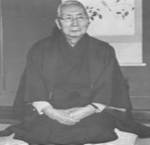
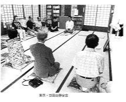

世田谷静坐会の歩み
昭和21年頃から、本会を創設されました故・深田淳先生(青山学院大学教授)（左下写真）のゼミの学生が、一緒に静坐させて欲しいと言ってご自宅で参坐したのをきっかけに、静坐会が始まりました。その後、学生を中心に関心を持つ人々が加わるようになり、徐々に参坐者が増えていきました。
このためご自宅では手狭になり、昭和49年5月からご自宅近くの竹下様のご厚意で竹下様方の教会広間をお借りして毎週日曜日に静坐会を開くようになりました。
深田淳先生が昭和59年90歳で天寿を全うされた後、ご子息の深田英朗先生(医学博士・日本大学歯学部教授)が、静坐会を受け継がれましたが、平成15年に逝去され、その後は会員有志が自主運営で会を引き継ぎ、今日に至っています。

